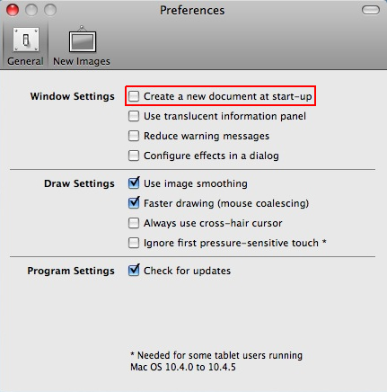
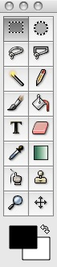
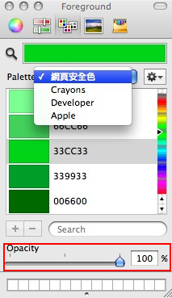
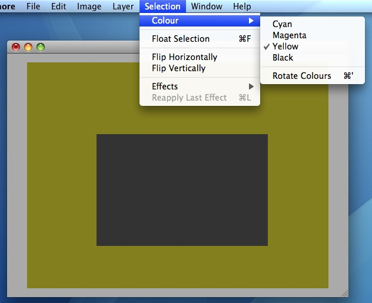
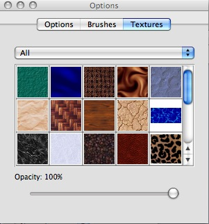
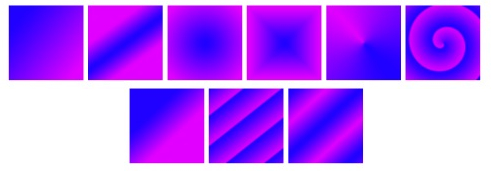
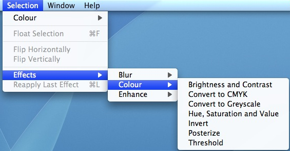

也紀念我們永遠的朋友 李士傑先生（Shih-Chieh Ilya Li）。
Mac 上的簡易繪圖替代方案 — Seashore
◎Seashore 簡介
隨著 Macbook 逐漸普及，愈來愈多 Windows 使用者加入 Mac 行列，但一開始卻苦於無類似 Photoshop 的軟體可用（使用 Photoshop 是要花錢買的），GIMP 雖然有 Mac 版且功能強大，但需要先安裝 X11 後才能在 Mac 上跑 GIMP，程序上有些麻煩，相較之下 Seashore 可下載後直接進行安裝，執行速度上比 GIMP 快，是一個小而美的繪圖軟體，要打個比喻的話可說是 Mac 上的小畫家，如果只是要做簡單的裁切或圖片製作，Seashore 就很好用了。
Seashore 是一款以 Cocoa 架構開發出來的繪圖軟體，一些重要的基本功能如文字與筆刷的多重圖層 (mutiple layers) 與 alpha channel 編輯均有支援，且可編輯 Bitmap (bmp) 檔，存檔格式也可選擇與 GIMP 相同的 XCF 檔案格式，可說十分方便。以下就簡單介紹 Seashore 的介面功能簡介，與常用的應用。
軟體名稱：Seashore
最新版本：0.1.9
軟體授權：GNU General Public License (GPL) 2.0
系統支援：Mac OS 10.3 以上
官方網站：https://seashore.sourceforge.net/
◎開啓新檔
啟動 Seashore 後，可看到程式是由左方的工具列、右方的 Options 視窗與 Layers 視窗組成，同時中間會自動出現 New Images 視窗，可決定新檔案的長寬與解析度，亦可選擇 24-bit 的 RGB color 與 8-bit 的灰階模式。
若不想每次一打開就要開 New Image，可於左上方功能清單【Seashore】->【Preferences】將自動開新檔取消勾選即可。

◎工具列按鈕一覽

工具列 (toolbar) 是所有繪圖軟體中必備的基本欄位，以下解釋各按鈕的功能：
左排由上至下依序是：方形選擇、不規則套索選擇、同一顏色選取、畫筆、文字輸入、探色棒、縮放工具（按右鍵放大圖片、左鍵縮小圖片）。
右排由上至下依序是：圓形選擇、多邊形套索選擇、鉛筆、填色、橡皮擦、漸層、圖章、移動工具。最下方的兩個正方形則分別顯示前景與背景顏色。
◎ 顏色選擇與透明度
顏色的呈現方式有多樣化的排列，以滿足不同類型使用的需求（如網頁設計、刊物排版……等），同時也可以選擇顏色的透明度（Opacity，如下圖紅框所示）。

◎改變未選取區域的顏色
在 Seashore 中的區域選擇，是將未選取區域以陰影方式呈現，然而若圖片本身為深色系，將使得被選取的區域不明顯，這時可選上方功能清單的【Selection】->【Colour】將未選取區域顏色，由黑色改為黃色或其他顏色。

◎如何畫直線
Seashore 中沒有直線工具，想要畫直線的話，只要選取鉛筆或畫筆工具，先按住 shift 鍵，再任意於畫面上點兩點，兩點間即會自動連成直線。
若想要畫水平或垂直的直線，則需先同時按住 shift 與 control 鍵，再於畫面上點水平或垂直的兩點即可。
◎在 Seashore 上進行圖片裁切
裁切圖片功能在編輯圖片時可說是最常用到的功能之一，先點選兩下方形選擇，選取好要裁切的區域後，再於 Options 視窗按下【Crop】鈕即可。
◎筆刷材質與漸層工具
Seashore 內有一些現成的筆刷材質 (Textures)，若應用於圖片背景可以創造出壁紙般的效果。

在漸層工具方面，則有數種漸層風格與 repeating pattern 可供選擇，上排由左至右分別是 linear, bilinear, radial, square, conical (symmetric) 與 spiral (clockwise) 的漸層風格 ，下排由左至右分別是 none, sawtooth wave 與 triangular 的 repeating pattern（圖片摘自 Seashore the incomplete guide, p.29）。

◎圖層的使用
Seashore 支援多重圖層，下圖即呈現一幅用多圖層所繪製的塗鴉：
Layers 最下層的工具列，由左至右的按鈕則可以新增、複製、上移、下移與刪除圖層。
如果要整合所有圖層，只要選擇上方功能清單的【Image】->【Flatten Image】即可進行。
◎圖片支援的特效
Seashore 支援一些基本的圖片特殊效果，選擇上方功能清單的【Selection】->【Effects】可進行選擇，包括模糊 (Blur)、顏色 (Colour)、增強 (Enhance)三大類，其中 Blur 的部份包含模糊與高斯模糊；顏色的部份可以加強亮度與對比、圖片色調轉至 CMYK 或灰階、色調 (Hue)、飽和度 (Saturation) 與明度 (Value) 調整、反轉顏色 (Invert)、Posterize 與 Threshold；增強的部份則可以強化圖片的銳利度。

◎小結
Seashore 是根據 GIMP 的原始碼進行開發， 所以 Seashore 看上去跟用起來都會和 GIMP 有幾分神似，已經在 Linux 平台上用慣 GIMP 的 user，也可以無痛使用 Seashore。不過開發者強調不想把 Seashore 變成另一版本的 GIMP，可以想見 Seashore 要發展出自己的特色仍然需要各界的幫忙。
Seashore 目前仍在開發中，雖然說用到現在沒出現過當機的情況，但若遇上了，也別忘了回報給 Seashore 的團隊，讓他們可以做出改進。
Special


Address：No.128, Sec.2, Academia Rd., Institute of Information Science, Academia Sinica, Nangang District, Taipei City 11529, Taiwan (R.O.C).
Privacy Policy. Terms-of-use